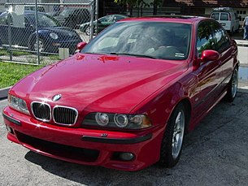

5 series e39

BMW E39 — модификация кузова BMW «пятой» серии, который выпускался с
1995 по 2003 год включительно. Предшественником данного кузова был BMW
E34, а ему на смену пришли BMW Е60 (в 2003 году) и BMW F10 (в 2010 году)
в совершенно новом стиле BMW. Базовой в семействе была модель 520i. Её
двухлитровый двигатель выдавал 150 л.с., а после рестайлинга объем вырос
до 2.2 литра, а мощность до 170 л.с. Версия M5 была выпущена в 1998
году. Она оснащалась двигателем V8 S62, который был сделан на базе
M62B44. Все модификации, кроме 535 и M5 были доступны в кузовах седан и
универсал. 535 и M5 выпускалась только в кузове седан